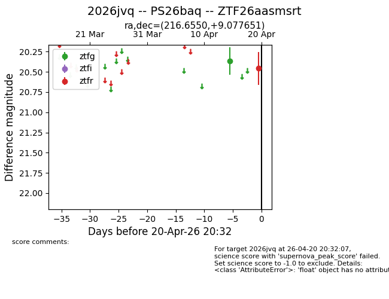
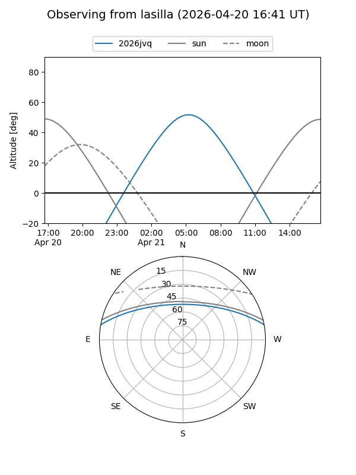
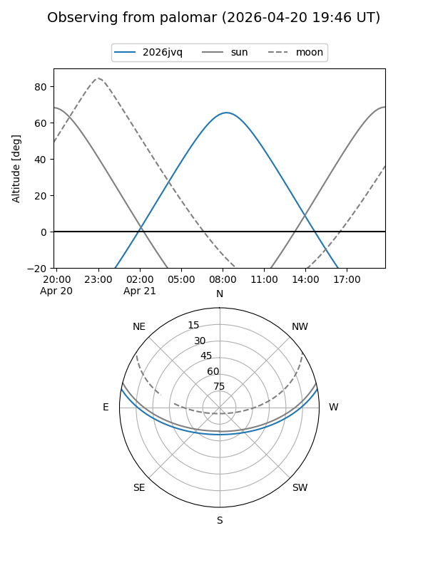

2026jvq
Target 2026jvq at 2026-04-20 20:42
Aliases and brokers:
FINK: link
Lasair: link
ALeRCE: link
TNS: link
YSE: link
alt names
ZTF26aasmsrt (ztf,fink_ztf)
2026jvq (tns,yse)
PS26baq (panstarrs)
Coordinates:
equatorial (ra, dec) = 216.6550,+9.07765
equatorial (HMS+DMS) = 14:26:37.21,+09:04:39.54
galactic (l, b) = (358.6520,+61.17232)
Flags:
Photometry:
last ztfg=20.37, ztfr=20.46
1 ztfg, 1 ztfr detections
Lightcurve

Visibility


Additional plots